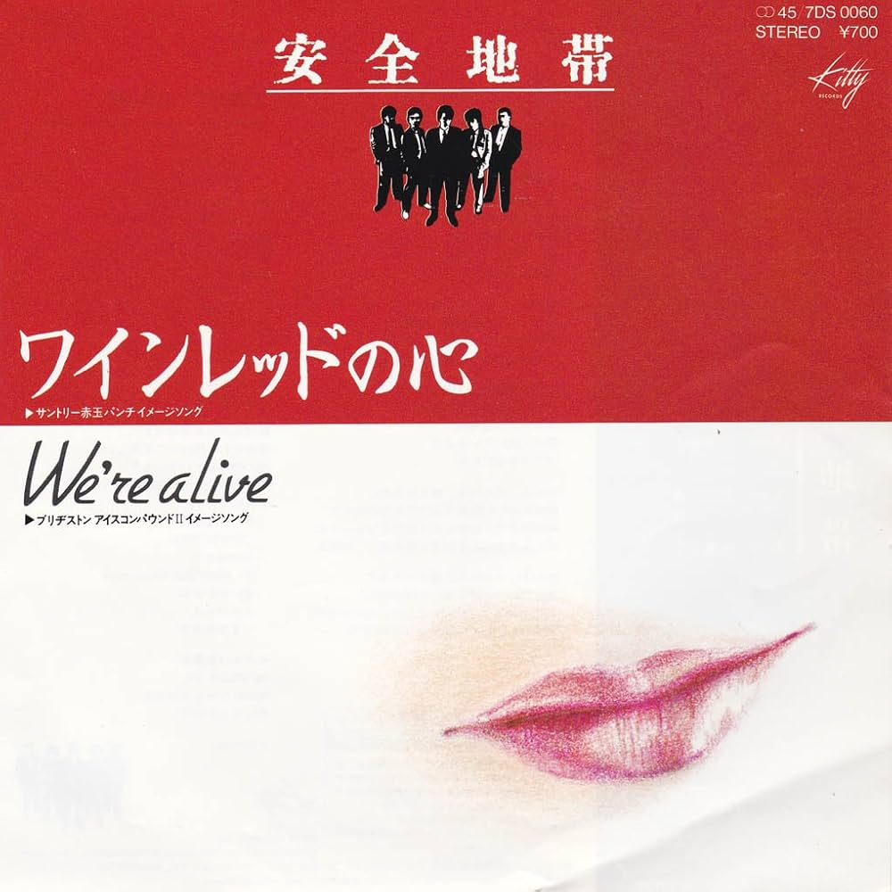

たかじいのお気に入り
← レコード棚に戻る
ワインレッドの心 安全地帯

発売日
1983年
作詞
井上陽水
作曲
玉置浩二
編曲
－
メディア
17㎝シングルレコード（ドーナツ盤）
YouTubeで見る
北海道出身の5人組バンド「安全地帯」による4枚目のシングルです。 メンバーは玉置浩二さん、矢萩渉さん、武沢豊さん、田中裕二さん、六土開正さん。 ボーカルは、今も活躍されている玉置浩二さんです。
シャープでありながらメロディアスなサウンドがとても魅力的で、 「安全地帯」の実力の一端が感じられる一曲です。
当時、目元をシャープにメイクして歌っていた玉置浩二さんの姿も、 今でも印象に残っています。
「ワインレッドの心」は、「安全地帯」というバンドのスタイルを 決めた一曲なのかもしれませんね。
後に発表された
「恋の予感」
もおすすめの一曲です。
歌詞より
♪♪ あの消えそうに燃えそうなワインレッドの ♪♪
歌ネットで歌詞を見る
← レコード棚に戻る
シャープでありながらメロディアスなサウンドがとても魅力的で、 「安全地帯」の実力の一端が感じられる一曲です。
当時、目元をシャープにメイクして歌っていた玉置浩二さんの姿も、 今でも印象に残っています。
「ワインレッドの心」は、「安全地帯」というバンドのスタイルを 決めた一曲なのかもしれませんね。
後に発表された 「恋の予感」 もおすすめの一曲です。